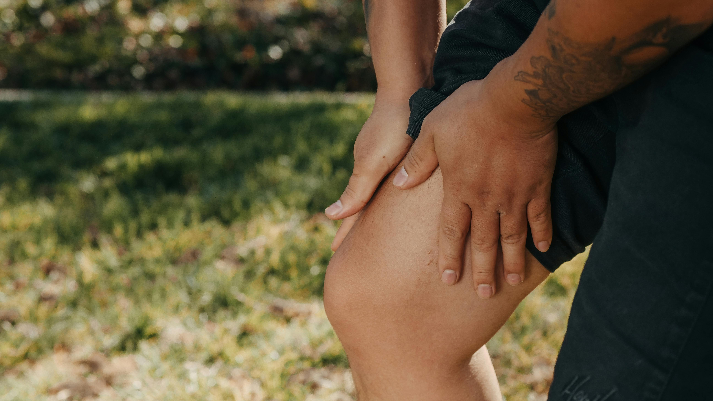

L'arthrose, notamment la gonarthrose, touche de plus en plus de
personnes, même jeunes. Découvrez comment l'arthrose se développe au
travail et comment vous pouvez prévenir ses effets avec une bonne
hygiène de vie et des gestes quotidiens adaptés.

Qu’est-ce que l’arthrose ?
L'arthrose est une maladie dégénérative des articulations qui touche
surtout les articulations mobiles, comme le genou, la hanche et les
doigts. La gonarthrose, en particulier, concerne l’usure du
cartilage du genou. Les symptômes incluent des douleurs et des
raideurs, et l’évolution de la maladie peut mener à une perte de
mobilité articulaire.
Les causes de l’arthrose
Les causes de l'arthrose sont variées : facteurs mécaniques,
génétiques et environnementaux. L’excès de poids, l'absence
d'exercice physique et les traumatismes répétés sont des facteurs
aggravants importants. L’arthrose touche de plus en plus de
personnes jeunes, et son évolution rapide pose de réels défis.
Comment l'arthrose se manifeste ?
Douleur mécanique dans l’articulation, souvent lors de mouvements
répétitifs (ex. : descendre des escaliers).
Sensibilité à la pression sur l'articulation.
Raideur matinale, généralement inférieure à 30 minutes.
Perte de flexibilité et inconfort lors de changements de
température.
Formation d’excroissances osseuses (ostéophytes).
Plus rarement, inflammation avec rougeur et gonflement.
Facteurs de risque de l'arthrose
Alignement incorrect des articulations (genoux valgum ou varum).
Prédisposition génétique.
Âge avancé et obésité.
Traumatismes articulaires : fractures, luxations.
Travail ou sport avec mouvements répétitifs ou sollicitation
excessive des articulations.
Manque d'activité physique, réduisant le tonus musculaire et la
circulation sanguine.
Port de talons hauts (principalement pour l'arthrose du genou).
Comment prévenir l'arthrose ?
Prévenir l'arthrose, notamment au bureau, commence par un mode de
vie sain. Voici quelques conseils pour réduire les risques et
soulager les symptômes :
Maintenir un poids santé
L'excès de poids, notamment au niveau des genoux, est un facteur de
risque majeur pour l'arthrose. Chaque kilo excédentaire augmente la
pression sur vos articulations, accélérant leur usure. L’objectif :
éviter toute surcharge pondérale pour préserver la santé de vos
articulations.
Pratiquer une activité physique régulière
L’activité physique protège vos articulations en renforçant les
muscles qui les soutiennent. Les exercices de renforcement et
d'étirement sont particulièrement bénéfiques pour les genoux et
autres articulations sollicitées au travail.
Adopter une bonne posture et éviter les gestes répétitifs
Évitez les positions prolongées et les mouvements répétitifs. Au
bureau, ajustez votre poste de travail : votre siège, écran et
clavier doivent être adaptés pour réduire les tensions sur vos
articulations.
L'ostéopathie : une approche préventive et curative
L'ostéopathie peut jouer un rôle clé dans la prévention et le
traitement de l'arthrose. Grâce à des techniques de manipulation
douces, l'ostéopathe travaille pour :
Réduire les douleurs articulaires en améliorant
la mobilité des articulations.
Prévenir la progression de l'arthrose par des
ajustements réguliers qui améliorent la posture et la fonction
articulaire.
Soulager les tensions musculaires qui aggravent
les symptômes de l’arthrose.
N’attendez pas que la douleur devienne insupportable. Une
consultation régulière avec votre ostéopathe peut vous aider à gérer
les symptômes de l'arthrose et à éviter des complications futures.